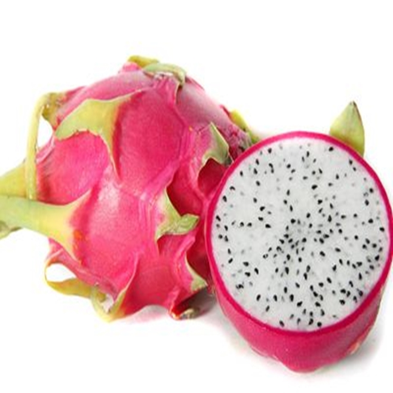

火龍果-鮮甜美味的健康選擇

| 產品名稱 | 紅肉火龍果 |
|---|---|
| 產品介紹 | 紅皮紫紅色肉火龍果，又名龍珠果或仙人掌果，是一種源自中美洲的熱帶水果。這種果實因其獨特的外形和鮮豔的顏色而受到喜愛，外觀如同火焰般耀眼，而內裡則蘊藏著令人驚艷的美味。 火龍果被譽為水果中的瑰寶，其橄欖狀的果形，鮮紅色的外皮既艷麗又奪目，每顆果實重約500至1200克。果肉甜而不膩，清淡中帶有一絲芬芳。 火龍果富含豐富的纖維、胡蘿蔔素，以及維他命B1、B2、B6、B12、C和鈣等營養素。根據果形的不同，火龍果有長形和圓球形之分，果皮上的鱗片也有長短之別。 |
| 產期 | 6-11月 |
| 主要特點 | ◆鮮豔色彩: 火龍果外皮呈現鮮紅或黃色，搭配綠色的葉片，讓人一見難忘。 ◆豐富營養: 火龍果富含維生素C、纖維素和抗氧化劑，有助於促進免疫系統健康、改善消化功能，並且有助於抗老化。 ◆清爽口感: 果肉柔嫩多汁，帶有微微的甜味，適合用來做沙拉、果汁或直接食用。 ◆低熱量: 每100克火龍果僅含約60卡路里，是減肥或維持健康飲食的理想選擇。 |
| 如何挑選 | ●用手感覺重量，越重代表汁多而且果肉豐滿。 ●外表選擇果皮轉色均勻、果萼端完全轉色。 ●肉質鱗片軟化反捲或是轉紅達一半以上。 ●無擦壓傷、裂果，果梗切口無腐爛。 |
| 保存方法 | 請將火龍果存放於陰涼乾燥的地方，避免陽光直射。若需延長保存期限，可將其放入冰箱冷藏室中，並在3-5天內食用完畢，以保持最佳鮮度和風味。 |

| 產品名稱 | 白肉火龍果 |
|---|---|
| 產品介紹 | 白肉火龍果，又名龍珠果或仙人掌果，是一種源自中美洲的熱帶水果。這種果實因其獨特的外形和鮮豔的顏色而受到喜愛，外觀如同火焰般耀眼，而內裡則蘊藏著令人驚艷的美味。 火龍果被譽為水果中的瑰寶，其橄欖狀的果形，鮮紅色的外皮既艷麗又奪目，每顆果實重約500至1200克。果肉甜而不膩，清淡中帶有一絲芬芳。 火龍果富含豐富的纖維、胡蘿蔔素，以及維他命B1、B2、B6、B12、C和鈣等營養素。根據果形的不同，火龍果有長形和圓球形之分，果皮上的鱗片也有長短之別。 |
| 產期 | 6-11月 |
| 主要特點 | ◆鮮豔色彩: 火龍果外皮呈現鮮紅或黃色，搭配綠色的葉片，讓人一見難忘。 ◆豐富營養: 火龍果富含維生素C、纖維素和抗氧化劑，有助於促進免疫系統健康、改善消化功能，並且有助於抗老化。 ◆清爽口感: 果肉柔嫩多汁，帶有微微的甜味，適合用來做沙拉、果汁或直接食用。 ◆低熱量: 每100克火龍果僅含約60卡路里，是減肥或維持健康飲食的理想選擇。 |
| 如何挑選 | ●用手感覺重量，越重代表汁多而且果肉豐滿。 ●外表選擇果皮轉色均勻、果萼端完全轉色。 ●肉質鱗片軟化反捲或是轉紅達一半以上。 ●無擦壓傷、裂果，果梗切口無腐爛。 |
| 保存方法 | 請將火龍果存放於陰涼乾燥的地方，避免陽光直射。若需延長保存期限，可將其放入冰箱冷藏室中，並在3-5天內食用完畢，以保持最佳鮮度和風味。 |